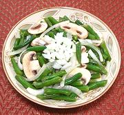

|
Green Bean SaladFrance - Salade de Haricots Verts | ||||
| Serves: Effort: Sched: DoAhead: |
5 salad ** 1-1/2 hrs Yes |
A justly popular salad in France. Most of the prep time is for slicing the beans, but they can be sliced even a day ahead anyway. | |||
|
1 5 1 6 1 4 2 1/4 2/3 1/3 |
# oz t oz cl T T t t t |
Green Beans, round Mushrooms Lemon Juice Onion, white Garlic Olive Oil, ExtV Wine Vinegar (1) Dry Mustard Salt Pepper |
Make - (1-1/2 hr - 25 min work)
|